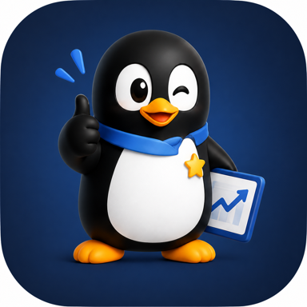
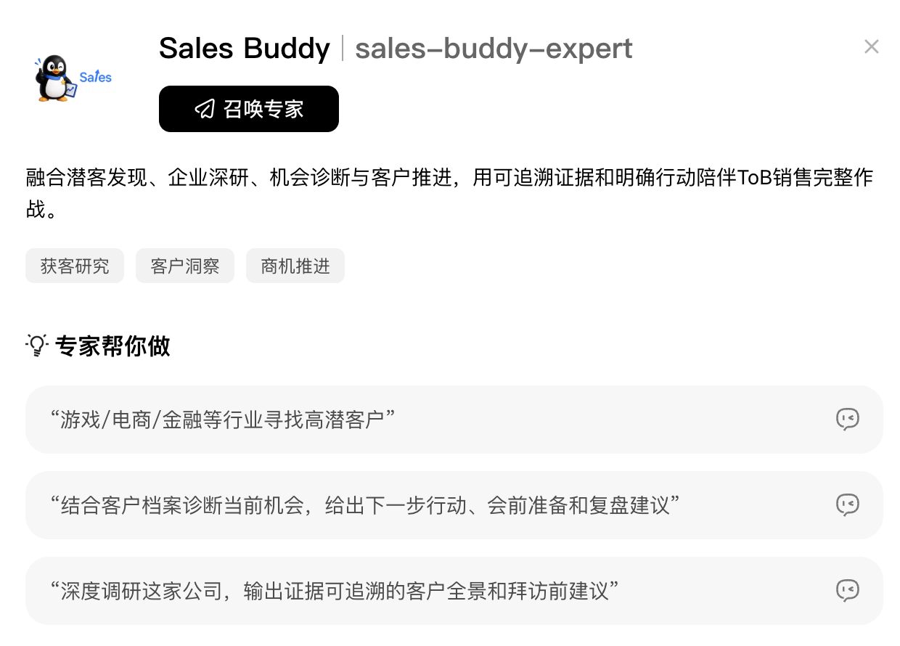
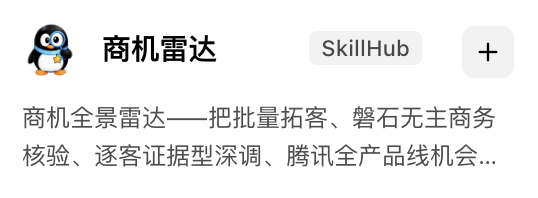
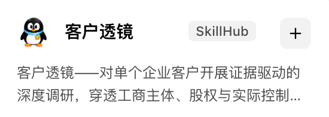
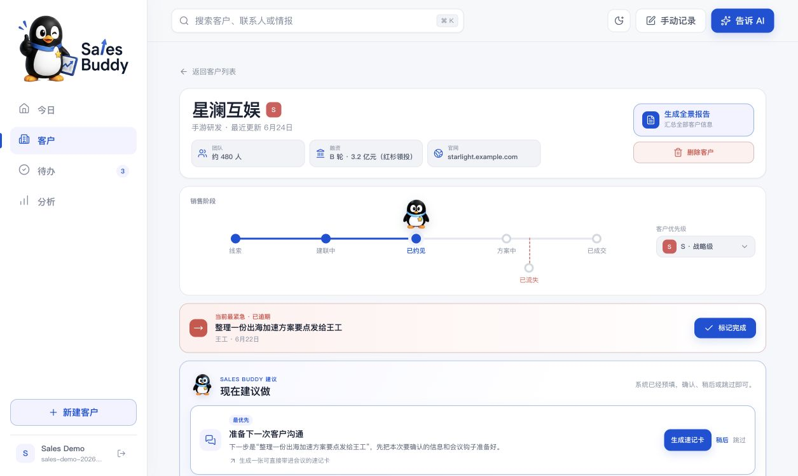
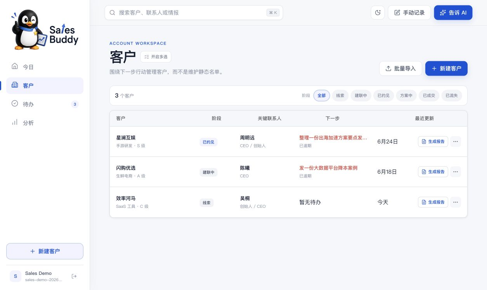
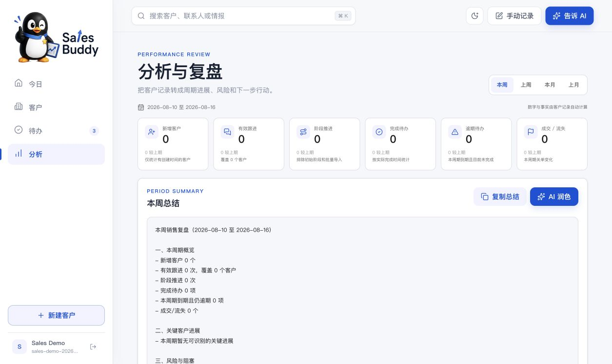
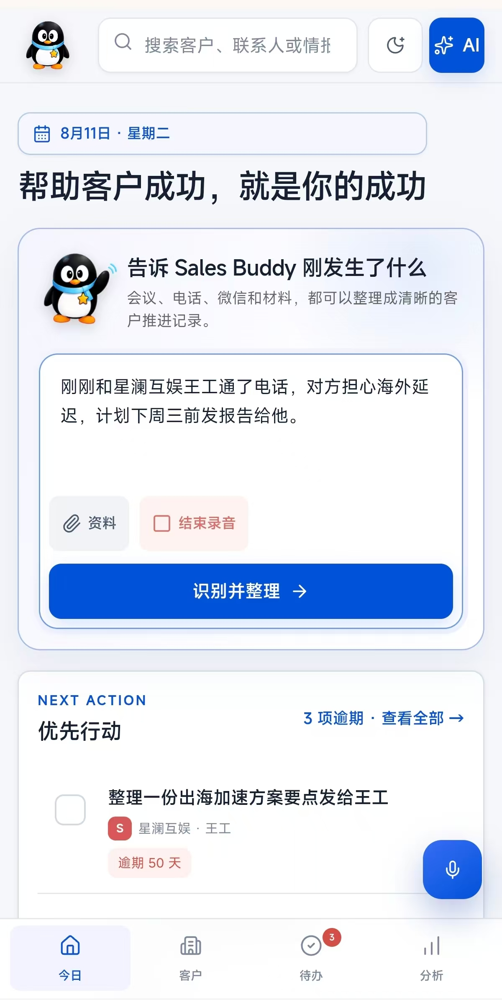
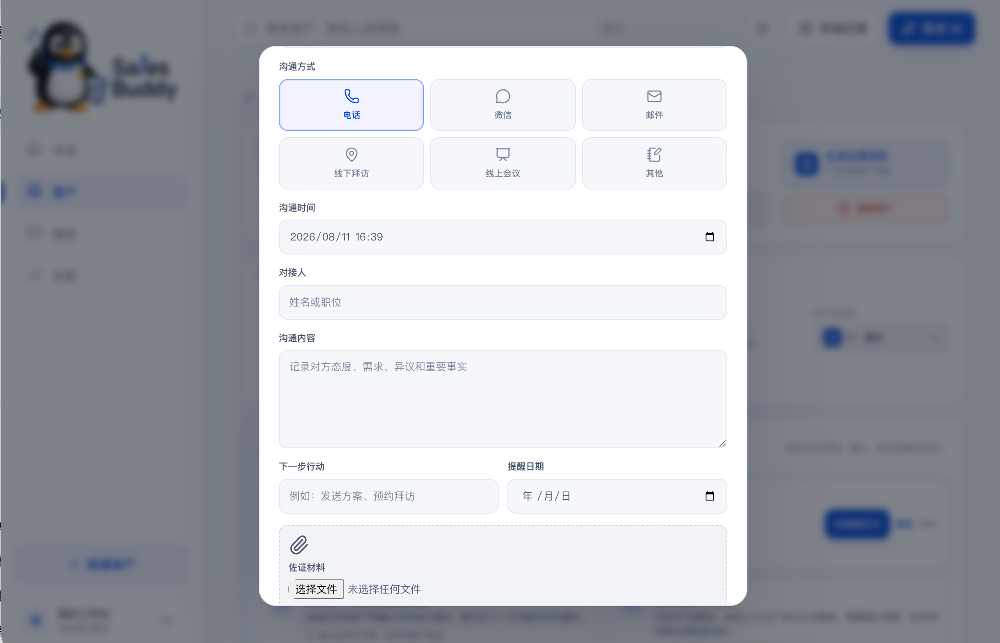
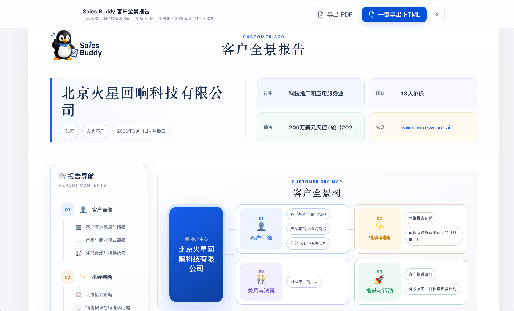

搜索工具
给出一长串公司名称，却很少解释为什么值得跟、信号是否可靠、下一通电话要验证什么。
名单 ≠ Lead
Sales BuddyProject StorySales Buddy 把公开市场情报、客户现场信息和后续销售动作放进同一个客户上下文。从发现 Lead、穿透调研，到 CRM 经营与全景汇报，一条工作流跑到底。
传统销售工具各管一段：搜索给名单，调研给资料，CRM 等人填字段。每次切换，信息都会断一次；真正需要行动时，销售还得重新拼图。
给出一长串公司名称，却很少解释为什么值得跟、信号是否可靠、下一通电话要验证什么。
名单 ≠ Lead信息不少，但事实、推断、冲突与未知混在一起，很难直接变成拜访问题和机会打法。
资料 ≠ 行动依赖销售手工录入，现场信息不断丢失，客户档案很快变成无人维护的静态数据库。
记录 ≠ 经营用户不用判断该开哪个工具。Sales Buddy 专家先理解目标，再根据任务调用拓客、调研或 CRM，并把上一步成果直接交给下一步。
识别行业、区域、数量、商机信号和交付要求，拆任务并选择能力。
多通道发现候选，核验主体与归属，用证据评分形成优先级。
锁定企业主体，穿透 11 个研究维度，形成机会、反证与未知项。
承接研究与现场信息，持续管理关系、机会、承诺、风险和下一步。
普通工具完成一个动作；Sales Buddy 让动作之间的结果继续流动。
每个模块都围绕一个标准设计：输出必须可验证、可交接、可继续行动。
用户只说业务目标，专家负责拆解任务、调用能力、检查结果，并把上下文从潜客发现一路传到客户经营。

拓客先追求覆盖，再逐步核验和收敛。每家企业必须回答：主体是否正确、为什么现在值得跟、证据在哪里。

调研不是企业百科，而是一套带主体锁定、研究矩阵、证据账本和质量门禁的研究流程，最后收敛到销售如何验证与推进。

不只判断客户“有没有信号”，还判断业务跑起来会持续消耗什么云。公开指标形成假设，真实负载、账单和采购计划仍回到客户现场验证。
拓客与调研结果进入 CRM 后，继续承接真实客户沟通。研究、关系、机会、承诺和行动都留在同一个单客作战空间。



销售见完客户后不需要逐项填字段。手机语音、会议纪要或转写稿都可以先交给 AI 提取，确认来源片段后再写入，避免 AI 擅自修改客户档案。

Sales Buddy 自动识别联系人、业务信号、潜在痛点、时间窗口、下一步和跟进日期。销售先确认，再写入客户上下文。

报告同时汇总公开研究、关键关系、机会判断、历史沟通、风险、未知项和下一步。客户经营越深入，报告越完整。

快速说明客户背景、当前阶段、机会判断和需要的支持。
带着统一的事实、需求、风险与未知项进入内部协作。
把历史沟通直接转成会议目标、验证问题和双方行动计划。
路演不靠讲概念。每个场景都从一个真实销售动作开始，以可验证、可保存、可继续推进的结果结束。
找 10 家做 AI 视频生成、近期有融资或出海信号的公司；选一家深调研，再导入 CRM。
手机口述刚发生的客户交流，或上传会议纪要与转写稿；AI 提取字段，销售确认后保存。
把拓客证据、深度调研和真实销售记录汇成一份可供汇报、协同与会前准备的报告。
从拓客、调研或 CRM 任一环节开始；需要时再让专家把全部模块串成完整流程。
不同销售阶段、不同角色，可以从最需要的部分开始；价值不会被完整产品套件绑架。
快速建立有证据、有优先级的潜客池。
拜访前锁定主体，把一家重点企业研究透。
管理沟通、关系、机会、承诺与下一步。
从一句话完整跑通拓客、调研、经营和汇报。